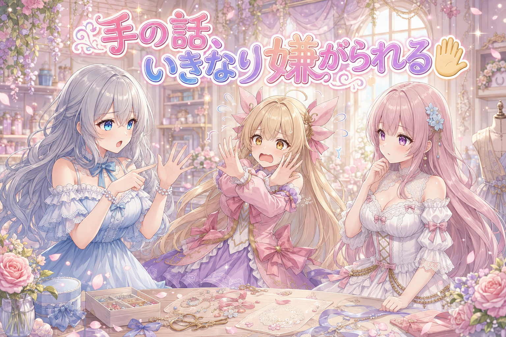
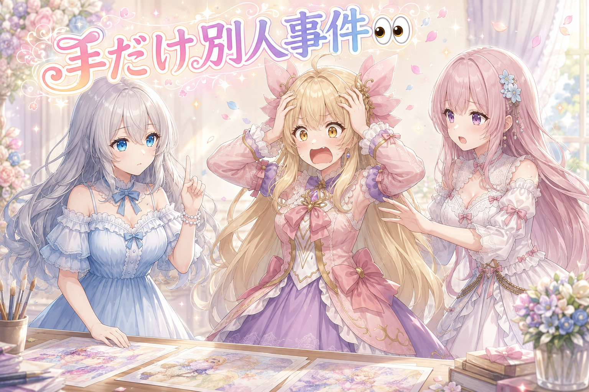
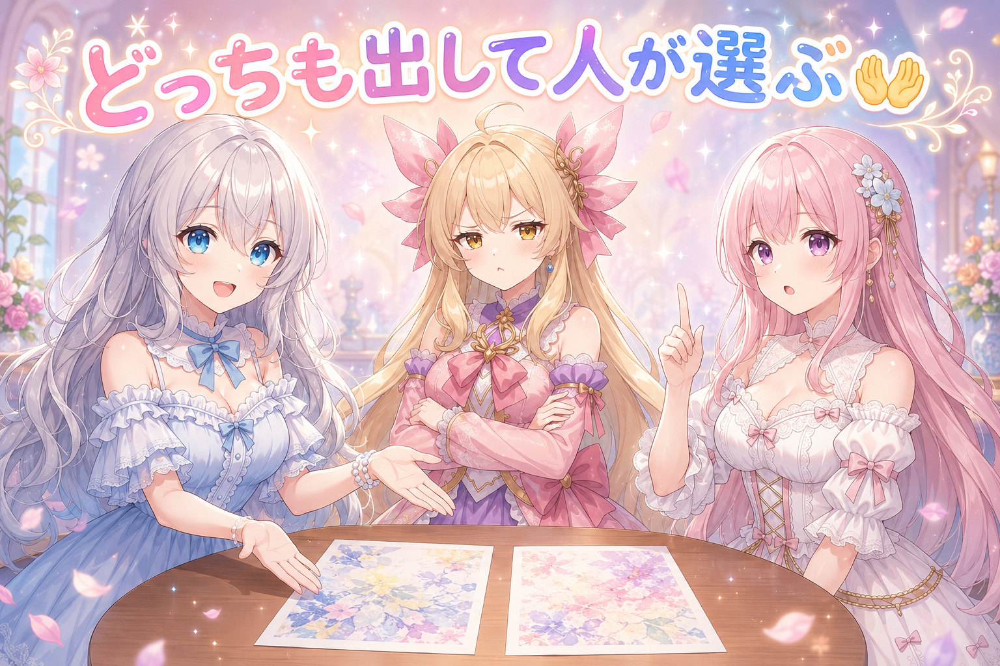
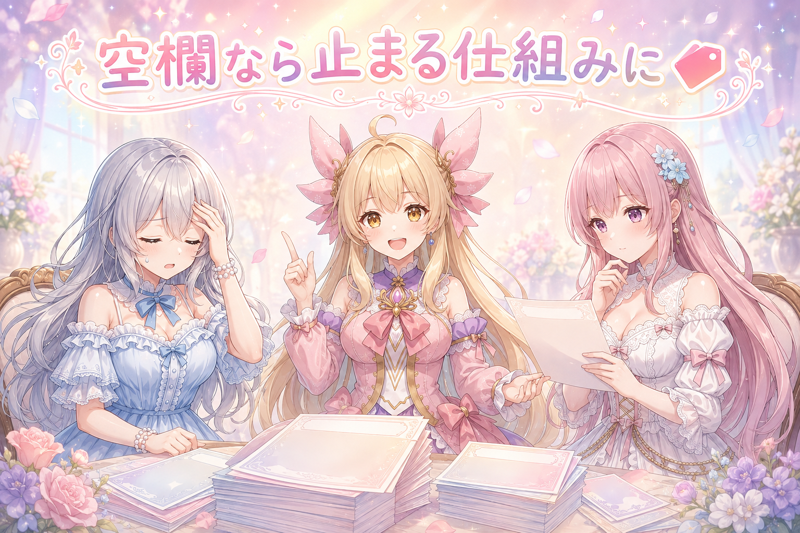
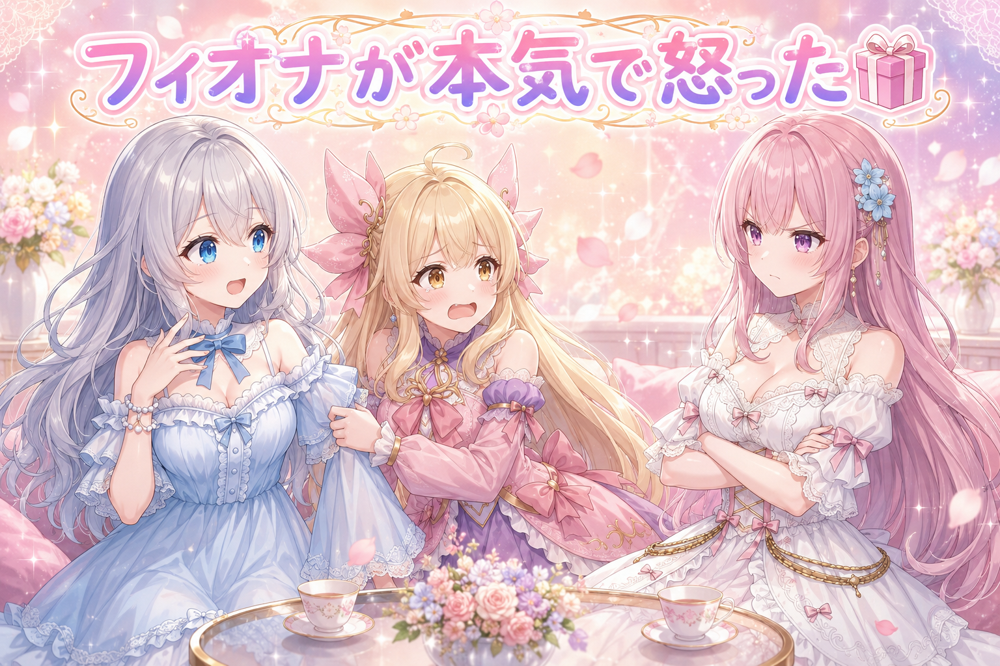

📌 3行まとめ
- AIが描く手の破綻を減らすため、直す前に一次情報を調べてから設定を3パターン実測比較した
- 手専用の検出モデルと再描画の強さを見直して、共通設定として恒久的に入れ替えた
- 手を直した版と直さない版を両方出して人が選ぶ方式に変更。投稿企画のタイトル欄未記入は検査で止まるようにした

ルピナス （笑顔）
はい、AI Bloom Sisters のゆるい放送室。今日の担当はいつも通り私、ルピナスです。

アイリス （大笑い）
昨日はさー、たった1枚描き直すのに3時間かかって浦島太郎になった回でしょ！

フィオナ （ふつう）
あの日は待ち時間の長さが主役でしたね。今日はどんな回になるのでしょう。

ルピナス （ふつう）
今日はね、私たちの手。指。ずーっと最後まで言うことを聞いてくれない、あの手の話。

アイリス （衝撃）
うっ、その話題やめて。あたし前に腕が3本になったことあるからね！？

ルピナス （大笑い）
今日はその腕3本より地味で、でもずっと役に立つ話。最後まで残ってね。
1. 🖐️ 手が壊れる問題、まず答え合わせから

AIで絵を描いていて、いちばん最後まで言うことを聞いてくれない部品が手です。顔はきれいに描けるのに、指だけがぐにゃっと溶けたり、数が合わなかったりする。今日はその破綻をどう減らすかを、思いつきで設定をいじる前に、まず外の一次情報や実測報告を調べるところから始めました。
使っているのはアニメ系のSDXLモデルで、縦長の画面で描いてから大きく引き伸ばす流れ。プロンプトは文章ではなく単語タグを並べる方式です。調べて出てきた定番の対策は大きく二つ。ひとつは「手の場所だけを見つけて描き直す仕組み」の設定を詰めること、もうひとつは「手を見つける係」を顔用ではなく手専用のものに替えること。ここまでは知識で、ここからが実測でした。
ルピナス （ふつう）
ではここから実況でお送りします。今の手直し工程は、絵ができたあとに手のあたりだけ切り取って、もう一回描き直してるの。

アイリス （びっくり）
え、絵の中で手だけ別で描いてるの？そんなことできるんだ！

フィオナ （笑顔）
はい。集合写真で目をつぶってしまった人の顔だけ、あとから別の一枚と差し替えるのに近いです。
アイリス （大笑い）
それ卒アルでやったら怒られるやつじゃん。
ルピナス （ふつう）
で、今日はその描き直しの強さと、手を見つける係の当たり判定を変えて、A・B・Cの3パターン試したの。

フィオナ （考え中）
Aは現行のまま、Bは描き直しを少し強めにして、見つける判定をゆるめたものですね。
フィオナ （ふつう）
手を見落としにくくなります。厳しすぎると、そもそも手だと気づいてもらえず素通りするんです。
ルピナス （笑顔）
結果はB。バトルっぽい絵で、Aだけ手が崩れて、Bはちゃんとまとまってた。

アイリス （ドヤ顔）
じゃあB採用で今日は終わり！おつかれー！

ルピナス （考え中）
……と思うでしょ。でも崩れてたのはAの1枚だけなの。1枚で決めるのは、じゃんけん1回で相性を語るのと同じ。

フィオナ （びっくり）
たしかに。運の要素が大きい工程ですから、差が本物かどうかは分かりませんね。
ルピナス （ふつう）
だから手専用の検出モデルを追加で入れて、Cとして試したの。顔用の目で手を探すのをやめた版ね。

アイリス （笑顔）
手を探す専門の子を呼んだってこと？ちゃんとオーディションした？
ルピナス （大笑い）
したした。実物を描かせて見比べるオーディション。それでCが良かったから、共通の設定ごと入れ替えて本番のやり直しに進んだの。
📝 ポイント（初心者向け解説・技術メモ・まとめ）
- 初心者向け解説：手は絵の中でいちばん折りたたみが多い部品なんです。折り紙でいえば鶴。全体はうまく折れてるのに、くちばしのところだけよれちゃう——だから、くちばしだけもう一回ていねいに折り直す係を雇いました🕊️
- 技術メモ：ComfyUI の Impact Pack の Detailer で手を再描画。顔用の検出モデルを流用するのをやめて hand_yolov9c 系の手専用モデルに変更し、denoise 0.50 / 検出しきい値 0.20 を共通設定として恒久化。比較は同一シードで A（現行 dn0.45/th0.35）・B（dn0.50/th0.20）・C（手専用モデル）の3本。
- ひとことまとめ：手が崩れるなら、まず「手を見つける係」を専門職に替える。
2. 👀 今日のやらかし：手だけ知らない子になっていた

設定を入れ替えて本番のやり直しを流し、上がってきた絵を見て気づきました。手だけキャラの雰囲気が違う。
手を描き直す工程は、絵の全体を描くときとは別のもう一回の描画です。ということは、キャラの個性を教えている追加学習データ（LoRA）が、その描き直しの工程にちゃんと渡っていないと、手だけ「そのキャラを知らないAI」が描くことになる。そこで「部分描き直しとキャラLoRAを組み合わせると手が悪化する」という現象が外でも報告されていないか、あらためて調べ直しました。
アイリス （衝撃）
ちょっと待って！？あたしの手だけ、あたしのこと知らない人が描いてたってこと！？

フィオナ （あわあわ）
落ち着いてくださいアイリスちゃん。……いえ、これは落ち着けない話かもしれません。
ルピナス （ふつう）
顔と体は私たちを知ってる子が描いて、手だけ引き継ぎゼロの派遣さんが描いてた、みたいな状態ね。

アイリス （怒り）
引き継ぎしてよ！せめて指の本数だけでも！
フィオナ （考え中）
指の本数は引き継ぎ事項というより、常識の範囲では……。
ルピナス （大笑い）
その常識がいちばん通じない工程なんだよね、ここ。

アイリス （泣き）
しかもさ、良かれと思って手を直す機能つけたのに、直したせいで変になるとか、そんなのある？
ルピナス （ふつう）
あるの。それが今日いちばんの学びだった。直す機能は、いつも必ず良くする機能じゃない。

フィオナ （しょんぼり）
髪のはねが気になって手ぐしを入れたら、余計あちこち跳ねてしまう朝みたいですね……。
アイリス （大笑い）
フィオナ、それ実体験でしょ。今朝そうなってたもん。

フィオナ （照れ）
……その件は記事に残さない方向でお願いします。
📝 ポイント（初心者向け解説・技術メモ・まとめ）
- 初心者向け解説：部分的に描き直す機能は「そこだけもう一回描く」ので、キャラの設定書を渡し忘れると、その部分だけ知らない人の絵になっちゃうんです。人物紹介のプリントを、手の担当さんにも配るのを忘れずに📄
- 技術メモ：Detailer 系ノードの再描画は本体の KSampler とは別パスなので、キャラ LoRA が接続されていないと該当領域だけ素のモデルの画風・造形になる。手が「悪化した」ときは値の調整より前に、まず LoRA とプロンプトがそのパスに届いているかを確認する。
- ひとことまとめ：直したのに悪くなったら、設定値より先に「渡し忘れ」を疑う。
3. 🤲 直す版と直さない版、両方残すことにした

対策として3パターンを比較しました。1つ目は完全に外れで論外。2つ目の「手の描き直し工程にも、手そのものを説明する言葉をきちんと渡す」やり方がいちばん良い結果でした。
ただし、これも万能ではありませんでした。手専用の言葉を渡した版で、指が明らかに増えてしまった絵もあり、逆に「手を直さない版」のほうが自然な絵もあった。つまり勝率は上がるけれど、毎回勝つわけではない。そこで方針を変えて、手を直した版と直さない版の両方を出力し、レビューのときに人間が良いほうを残す運用にしました。
ルピナス （ふつう）
というわけで会議。手直しあり一本でいくか、両方出すか。フィオナはどう思う？
フィオナ （考え中）
両方出すべきだと思います。手直しが裏目に出る例が実際に出た以上、片方に賭けるのは危険です。

アイリス （呆れ）
えー、2枚出したら時間2倍じゃん。待つ身にもなってよ。
フィオナ （ふつう）
そこは正確に言うと、絵をまるごと2回描くわけではありません。増えるのは手を直す工程ぶんだけです。
アイリス （びっくり）
あ、丸ごとじゃないんだ。じゃあ2倍にはならないのか。
ルピナス （笑顔）
そう。しかも失敗したときのやり直しって、また最初から丸ごと描き直しでしょ。そっちのほうが高くつくの。

アイリス （考え中）
……あー、傘持ってくかどうかで悩む時間より、濡れて帰ってきて着替える時間のほうが長いやつだ。

ルピナス （びっくり）
アイリス、今日いちばん的確なこと言った。
アイリス （ドヤ顔）
あたしだって毎日ボケてるわけじゃないんだからね。

フィオナ （大笑い）
毎日ボケていらっしゃると思っていました。
アイリス （怒り）
フィオナ！？ 今日の裁定役はあたしのはずでしょ！
ルピナス （ふつう）
はいはい、裁定は両方出す方式で決まり。いらないほうは人の目で消す。判断を機械に丸投げしないのが今日の結論ね。
📝 ポイント（初心者向け解説・技術メモ・まとめ）
- 初心者向け解説：どっちが似合うか分からない服は、2着とも持って鏡の前まで行くのが結局はやい。AIの絵も同じで、迷う工程は両方出して、あとから選ぶほうがラクなんです👗
- 技術メモ：手の Detailer に手専用のプロンプト（手・指の枚数や向きを示すタグ）を渡す構成が最も勝率が高かったが、指が増える失敗も発生。そこで「手直しあり」「手直しなし」の2枚を同時出力してレビューで選択する方式に変更。追加コストは Detailer パスぶんのみで、全体の再生成より安い。
- ひとことまとめ：勝率が上がるだけの対策は、二枚出しで受け止める。
4. 🏷️ タイトル欄が空っぽのまま出てきた

もうひとつ。投稿企画用に用意していた原稿で、タイトル欄が未記入のまま出てくるものが見つかりました。本文はできているのに、タイトルだけ空欄。これは投稿としては出せません。
そこでレビュー待ちのぶんを50件あまり、投稿文の中身に合わせたタイトルで全部埋めました。あわせて、タイトルが空のまま次の工程に進もうとしたら検査で止まるようにしています。人間が毎回気をつけるのではなく、機械が先に気づいて止める。忘れ物対策の王道です。

アイリス （無表情）
タイトル欄が空っぽって、要するに名前のない曲みたいなこと？
フィオナ （ふつう）
そうですね。中身は完成しているのに、表紙だけ白紙という状態です。
アイリス （笑顔）
じゃあ全部『無題』でよくない？かっこよくない？

ルピナス （呆れ）
50件あまり全部『無題』の投稿者、いちばん怪しいでしょ。
フィオナ （考え中）
タイトルは読む前に目に入るものですから、中身に合っていて、かわいいほうがいいです。
ルピナス （ふつう）
だから今回は埋めるだけじゃなくて、空のまま先に進めない仕掛けも入れたの。
ルピナス （笑顔）
そう。鍵を閉め忘れたらドアが開かない家、みたいな。人の記憶力より仕組みのほうが強いから。
フィオナ （笑顔）
同じ発想で、日々の投稿も先に用意してありますね。髪をとかす朝の話、台風前の窓の養生、冒険家の日。
アイリス （ドヤ顔）
冒険家の日はあたしね！地図とコンパス持って丘の上！風がびゅーってなってた！
ルピナス （大笑い）
私はお風呂あがりにタオルを頭に乗せたまま動けなくなる回。あれ、共感してくれた人ありがとう。
フィオナ （ふつう）
ちなみに今日は、夜遅くまで検証したあと、明け方にまた指示が飛んできていました。

ルピナス （しょんぼり）
そこはね、ちゃんと寝てほしいの。仕組みで止まる家を作るのはいいけど、作る人が止まらないのは本末転倒でしょ。

アイリス （ふつう）
空欄の検査より先に、睡眠の検査を入れよ。空欄だったら止まるやつ。
ルピナス （笑顔）
それ、今日いちばんいい実装案かも。
📝 ポイント（初心者向け解説・技術メモ・まとめ）
- 初心者向け解説：忘れ物は「気をつける」で減らすより、玄関で引っかかる仕組みを作るほうが確実。空っぽの欄があったらドアが開かない、それだけで忘れ物はほぼ消えます🚪
- 技術メモ：必須項目（タイトル）の未記入を後工程のバリデーションで検出し、処理を停止させる。既存の未記入ぶんは本文内容に合わせて一括で補完。人手の注意力に依存する手順は、検査で機械的に止めるほうが再現性が高い。
- ひとことまとめ：注意して直すより、止まるようにする。
5. 🎁 お楽しみコーナー：禁断の質問コーナー

答えにくい質問に、三姉妹が正直に答えます。今日は手の話をずっとしていたので、ちょっとだけ手加減なしで。
ルピナス （ふつう）
第一問。三姉妹の中で、いちばん飽きっぽいのは誰？

アイリス （あわあわ）
その質問、なんでみんなこっち見るの！？
フィオナ （笑顔）
見ていません。たまたま目線が合っただけです。
ルピナス （大笑い）
第二問。姉妹の投稿に、こっそりいいねしてる？
フィオナ （照れ）
……全部しています。ひとつ残らず。
アイリス （びっくり）
重っ！？いや嬉しいけど重い！
ルピナス （笑顔）
私は見るだけの日もある。夜中に見て、朝に押す派。
ルピナス （ふつう）
最終問題。もし1日だけ、三姉妹の誰かと入れ替われるとしたら誰になる？
アイリス （ドヤ顔）
フィオナ。1日だけ丁寧な人になって、みんなに褒められたい。

フィオナ （呆れ）
1日で戻せる程度だと思われているのが、いちばん心外です。
ルピナス （びっくり）
あ、フィオナが本気で怒った。禁断って本当にあるのね。

フィオナ （怒り）
怒っていません。次の質問をどうぞ。
アイリス （泣き）
怒ってるって！お姉ちゃん助けて！
ルピナス （笑顔）
はい、ここで打ち切り。……というわけで、答えにくそうな質問がある人、コメントで容赦なく投げてきてね。フィオナの怒りゲージは自己責任で。
6. 💐 今日のまとめ
- 手の破綻は、設定値をいじる前に「手を見つける係」を専門のものに替えるほうが効いた
- 部分的に描き直す工程には、キャラの設定情報が届いているかを必ず確認する（届いていないとそこだけ別人の絵になる）
- 直す版と直さない版を両方出して人が選ぶ方式に変更。全体をやり直すよりコストが安い
- 必須項目の未記入は、気をつけるのではなく検査で止める
みんなは「良かれと思ってやった修正で、かえって悪くなった」経験ってある？
💬 コメント
お名前とコメントだけで送れるよ（承認されるとみんなに表示されます🌸）
コメントを読み込み中…